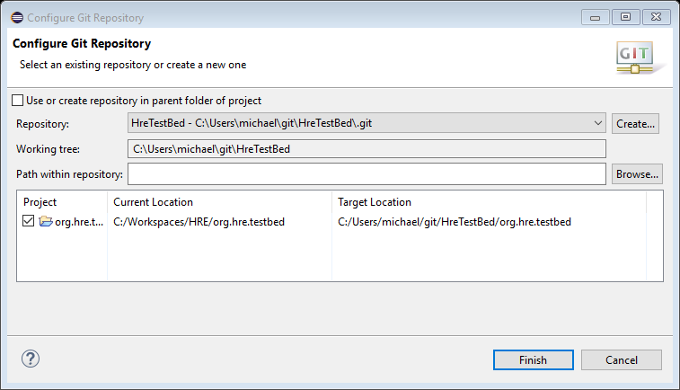
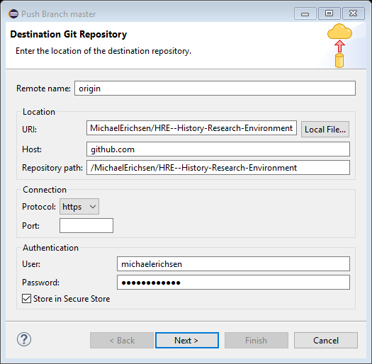
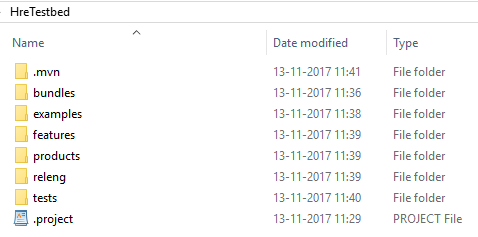
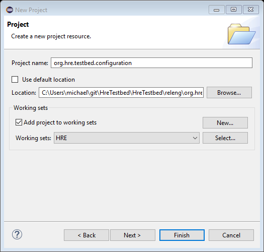

Select the project and select Team, Share project
|
Configure Git Repository |
Team, Add to Index
Team, Commit
Team, Push branch master
|
Push Branch master |
Now the project has been moved to C:\Users\michael\git\HreTestbed\HreTestbed
Add .mvn/extensions.xml
|
<extensions> <extension> <groupId>org.eclipse.tycho.extras</groupId> <artifactId>tycho-pomless</artifactId> <version>0.26.0</version> </extension> </extensions> |
Add bundles, examples, features, products, releng and tests folders
|
Screen Clipping |
For each project you must first create a folder with the same name, and then place the project in that folder rather than in the default location.
|
New Project |
Follow the documentation: http://www.vogella.com/tutorials/EclipseTycho/article.html